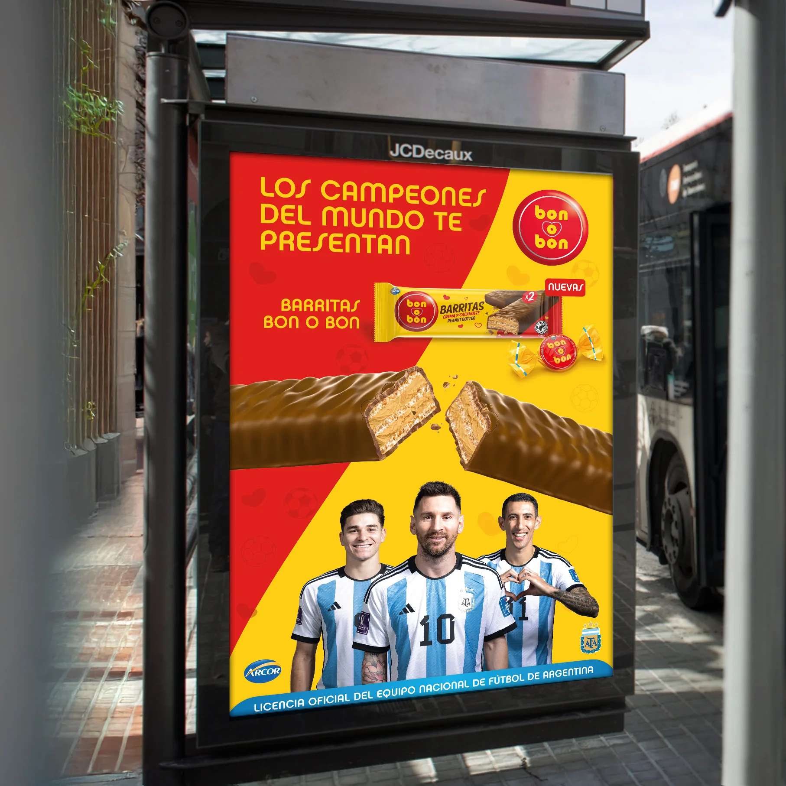
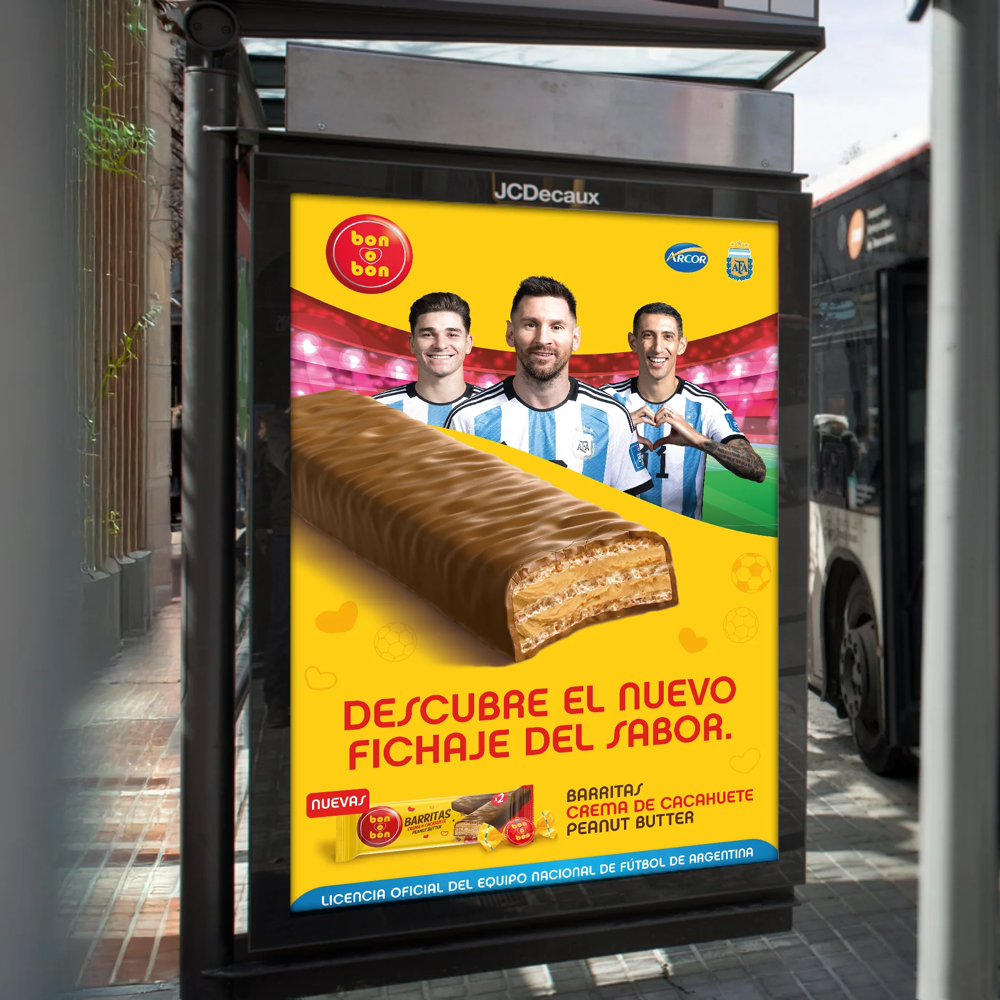
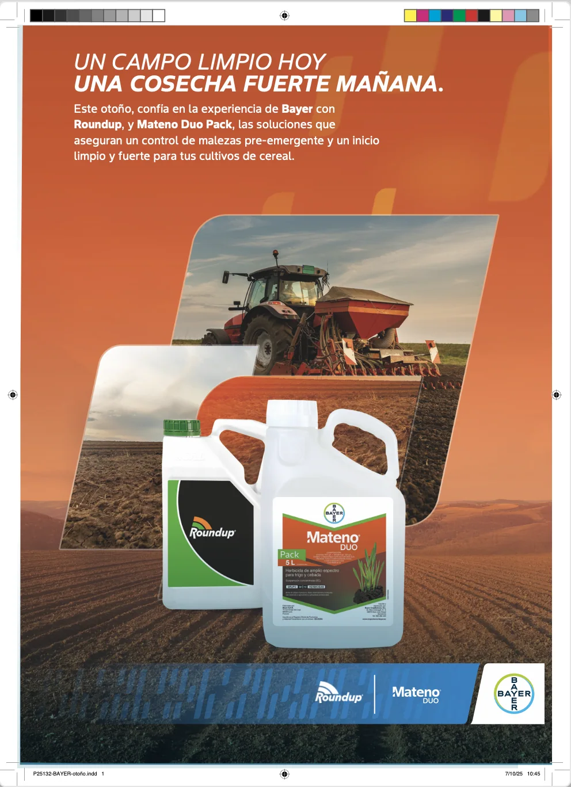
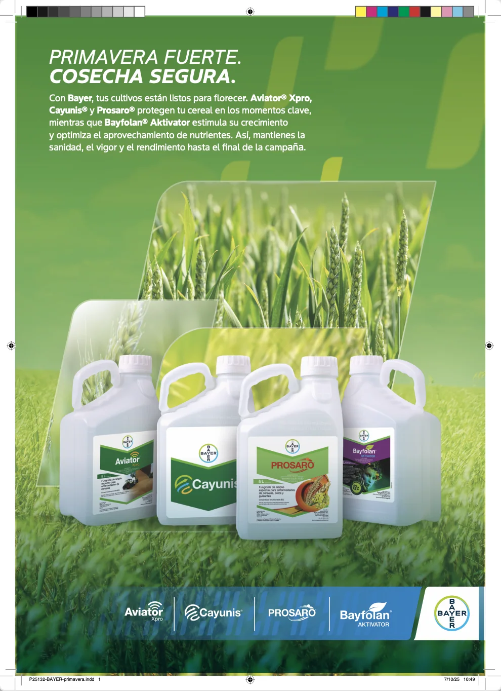
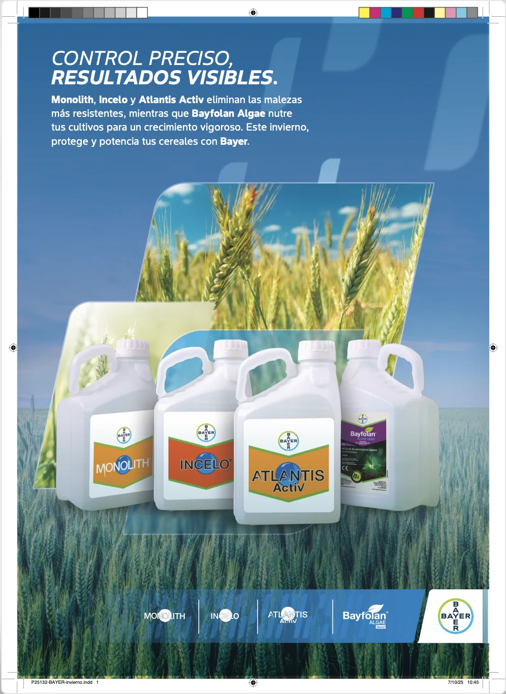
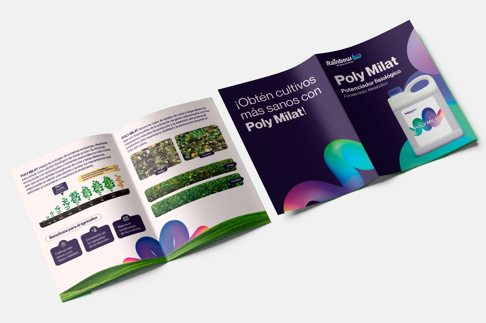

Diseño de Impresos
He creado y preparado artes finales para una amplia variedad de materiales impresos, desde folletos y piezas editoriales hasta publicidad exterior de gran formato.
Esto incluye vallas publicitarias e incluso proyectos de gran tamaño, como el envoltorio completo de un Tram en Barcelona, asegurando que cada pieza cumpliera con las especificaciones técnicas y se imprimiera con el mayor impacto visual.








